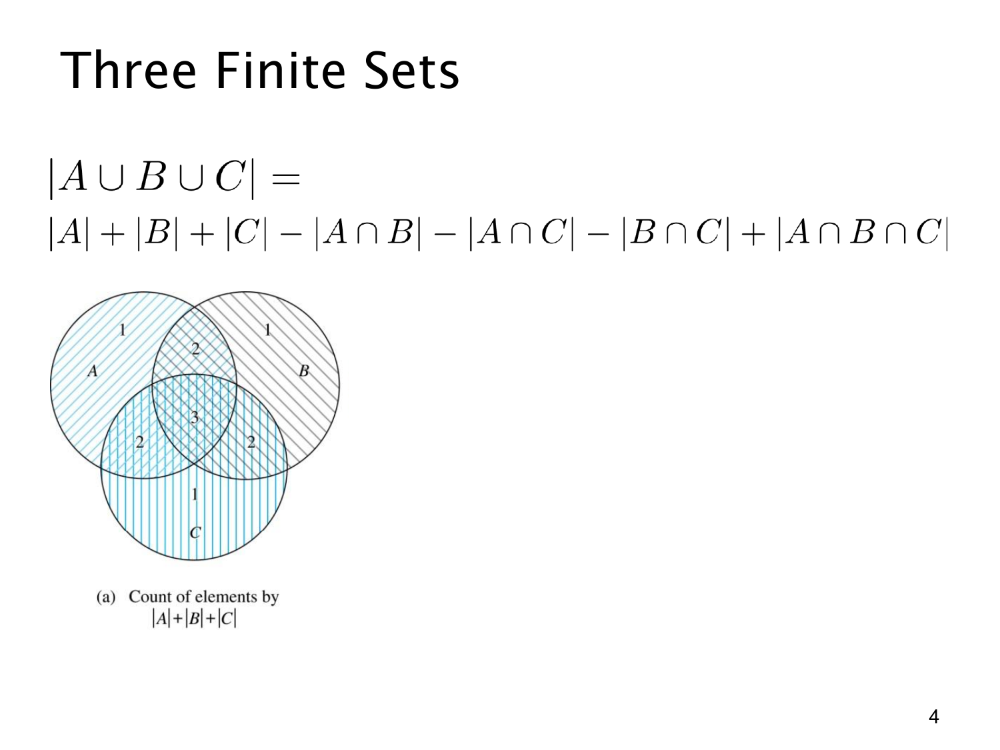

L1.8 · 第 3 页讲解原文
查看这一页课件

三个集合：为什么最后还要加一次？
这一页把两个集合的容斥推广到三个有限集合：
∣A∪B∪C∣=∣A∣+∣B∣+∣C∣−∣A∩B∣−∣A∩C∣−∣B∩C∣+∣A∩B∩C∣.
先看图中的数字 1、2、3：它们表示直接相加 ∣A∣+∣B∣+∣C∣ 时，一个元素被数了几次，并非各区域的人数。
只属于一个集合的元素被数 1 次，已经正确；恰好属于两个集合的元素被数 2 次，所以要减去两两交集。
但中央同时属于三个集合的元素，最初被数 3 次。它也同时出现在 A∩B、A∩C、B∩C 三个交集里，所以减去这三个交集后，它的计数变成
3−3=0.
它本来应该被保留一次，于是最后要把三重交集加回来：
3−3+1=1.
逐类检查就很清楚：
| 元素所在的集合数 | 加单集合 | 减两两交集 | 加三重交集 | 最终次数 |
|---|---|---|---|---|
| 1 | 1 | 0 | 0 | 1 |
| 2 | 2 | −1 | 0 | 1 |
| 3 | 3 | −3 | 1 | 1 |
要特别注意：A∩B 包括也属于 C 的元素，不是“只属于 A 和 B、不属于 C”。容斥公式使用的都是完整交集。